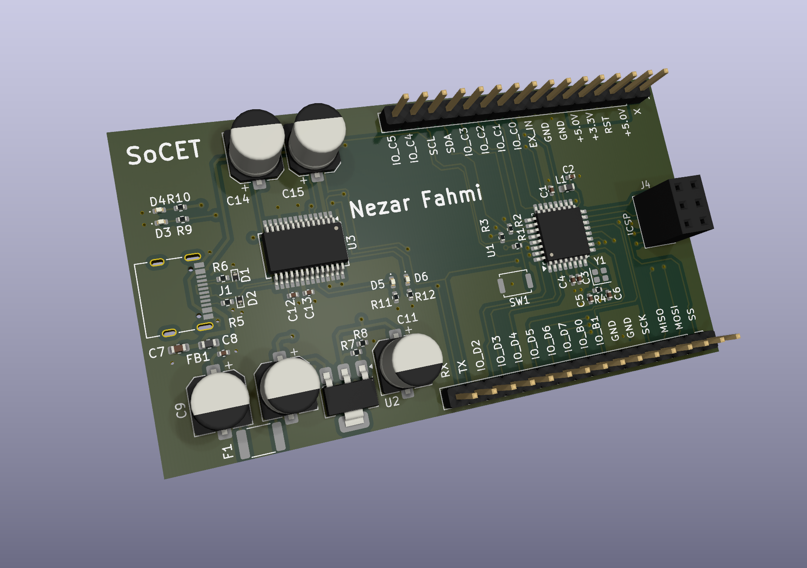

Arduino-Compatible Development Board
3D layout visualization

Overview
This project is a custom Arduino Uno-style development board built around the ATmega328P microcontroller. It was designed in KiCad as part of a PCB lab through SoCET's Intro I / Chip Design Skills course to develop practical experience with schematic capture, component selection, footprint assignment, PCB placement, routing, and design-rule verification.
Schematic capture
More details
The board includes a USB-C power input with overcurrent protection, an LM1117 3.3 V regulator, an FT232RL USB-to-UART programming interface, an external 16 MHz crystal oscillator, an ICSP header, and dedicated GPIO breakout pins. The two-layer PCB was routed with continuous ground referencing, local decoupling near each integrated circuit, and clear separation between the power, programming, clock, and user-I/O sections.